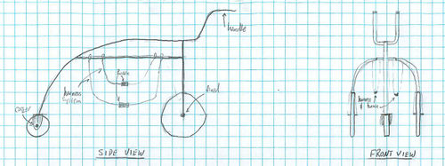
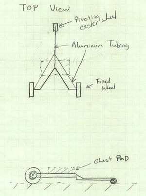
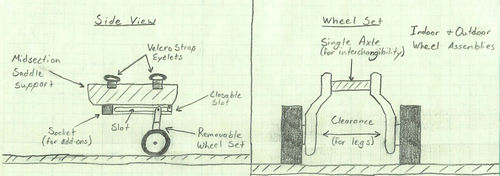

Adaptive mobility device F13
Contents |
Abstract
Our project group is tasked with the design of an adaptive mobility device for a 14-month-old child who has been diagnosed with spina bifida. The goal of our project is to assist the child in moving about multiple environments in which the child may be placed.
Team Members
- Christopher Blackburn
- Jacob Coffey
- Scott Hill
- April Parkison
- Robert Walker
Overview of the Need
The child is unable to move its legs below the knee, which in turn causes crawling to be a difficult task. Our aim is to develop a device that will promote a natural crawling motion in order to alter the child's mobility while simultaneously strengthening the muscles that are present in her upper thighs.
Design Specifications
- The device must be able to support the child's current weight of 23 lbs, as well as its future weight.
- The device must have a high degree of portability.
- The device must support use in multiple environments, i.e. indoors, outdoors.
- The device must be durable in order to be used for an extended period of time.
Conceptual Design
Design Concept 1
This design option incorporates a suspended harness to support the weight of our child with spina bifida. Using two fixed wheels and one swivel caster, this mobility device will allow for a range of planar motions associated with an infant crawling.
Pros:
1. Reduces load from infant's weight on her legs
2. Allows parent or guardian to assist in the child's mobility
3. Allows for reciprocal movement between the arms and legs.
Cons:
1. Safety problem associated with wheels near infant's hands
2. Structure may cause a reduction in the portability of the device.
Design Concept 2
This design option depicts a device in which the child with spina bifida lays on her stomach and crawls using her hands and the little strength she has in the upper portion of her legs.
Pros:
1. Reduces load from infant's weight on her legs
2. Easy to construct and analyze
3. Minimal number of parts
4. Rigid and able to withstand abuse
Cons:
1. Associated movements would not be natural. i.e. Turning around.
2. Not easily modified by parent or guardian in the future to accommodate the child's growth.
3. The caster wheel would need to be pretty far out to avoid catching/crushing fingers.
4. If strapped on, she will not be able to sit up and play
Design Concept 3
This design option depicts a set of adjustable "training wheels" which will take much of the child's weight off of her legs. This will allow the child to crawl on her own, using her knees, and gradually build strength in parts of her legs.
Pros:
1. Reduces load from infant's weight on her legs
2. Very portable
3. Encourages natural movement
4. Allow her to sit up and play with the device attached
5. Modular components
Cons:
1. May quickly tire the child's upper body.
2. Doesn't necessarily encourage lower body strength.
Candidate Selection
Upon careful evaluation of the pros and cons of each conceptual design, the team decided that Design Concept 3 provided the most accurate conformity to the design specifications while simultaneously preventing possible issues related to the safety and transportation of the device.
Detailed Design
Description of Selected Design
Analysis
In order to determine an appropriate loading for our simulations, we analyzed the female infant growth chart seen below. From the chart, we determined a maximum weight of 38 lbs at an age of 36 months would be an appropriate reference point to test our design.
Engineering Analysis 1
Von Mises Stress
Factor of Safety
Deformation
The saddle was stress tested under a pressure of 5.106 psi. This is equivalent to a loading of 400 lbf applied over the entire top area of the saddle. As indicated by the test results, there is no significant deformation in the saddle, and thus the saddle is capable of supporting much higher loads. These results, in conjunction with the pediatric growth chart, indicate that the child's weight will not compromise the structural integrity of the device.
Engineering Analysis 2
Von Mises Stress
Factor of Safety
Deformation
Similarly, the leg was stress tested under a loading of 200 lbf applied to the top of the leg, which is half of our test weight of 400 lbf. Upon review, no significant deformation has occcurred in the leg. As in the testing of the saddle, these results for the leg, coupled with the pediatric growth chart, indicates that the child's weight will once again not compromise the structural integrity of the device.
Engineering Analysis 3
CAD Drawings
Saddle
Leg
Frame Member
Bill of Materials
| Item | Description | Price | Quantity | URL for Purchasing | Total |
|---|---|---|---|---|---|
| T-Slotted Al Channel | Item #: 47065T101 from McMaster Carr (4 ft length) | $14.20 | 1 | http://www.mcmaster.com/#t-slotted-framing/=p0ozbz | $14.20 |
| End-Feed Fasteners for T-Slotted Al | Item #: 47065T147 from McMaster Carr (1 pack contains 4) | $4.29 | 1 | http://www.mcmaster.com/#t-slotted-framing/=oz94wa | $4.29 |
| End-Feed Fasteners for T-Slotted Al | Item #: 47065T226 from McMaster Carr (1 fastener per pack) | $1.12 | 4 | http://www.mcmaster.com/#t-slotted-framing/=oz99ls | $4.48 |
| 303 Stainless Steel Flat Bar | Item #: 9084K156 from McMaster Carr 1/8" Thick, 1-1/4" Wide, 6' Long | $54.71 | 1 | http://www.mcmaster.com/#standard-stainless-steel-sheets/=p0hmxp | $54.71 |
| T-Slot Channel End Cap | Item #: 47065T91 from McMaster Carr (1 cap per pack) | $1.20 | 4 | http://www.mcmaster.com/#t-slotted-framing/=oz9hly | $4.80 |
| T-Slot Covers | Item #: 47065T93 from McMaster Car (approx. 6 ft strip per pack) | $4.15 | 1 | http://www.mcmaster.com/#t-slotted-framing/=oz9kyf | $4.15 |
| 1/4-20 inch thumb screw | Item #: 91185A398 from McMaster Carr (10 per pack) | $8.38 | 1 | http://www.mcmaster.com/#catalog/119/3066/=ozy3m4 | $8.38 |
| Omni-Directional Wheels | 5 inch Outside Diameter, Load Capacity: 30 kg | $28.80 | 2 | http://www.robotshop.com/productinfo.aspx?pc=RB-Nex-08&lang=en-US | $57.60 |
| 1/4-20 bolt | Item #: 91251A546 from McMaster Carr (1-1/2 length, 50 bolts per pack) | $10.42 | 1 | http://www.mcmaster.com/#catalog/119/3080/=ozy3g7 | $10.42 |
| 1/4-20 nut | Item #: 90715A125 from McMaster Carr (50 nuts per pack) | $9.26 | 1 | http://www.mcmaster.com/#catalog/119/3170/=ozy39t | $9.26 |
| Memory Foam | Memory foam mattress pad, 2 in thick, made for twin size bed | $46.99 | 1 | http://www.foambymail.com/V_3/3lb-memory-foam-topper.html | $46.99 |
| Velcro | Sticky-back Velcro(Black) | $3.00 | 1 | http://www.homedepot.com/p/Velcro-18-in-X-3-4-in-Sticky-Back-Tape-90078/202261915?cm_mmc=shopping-_-googleads-_-pla-_-202261915&skwcid&kwd=&ci_sku=202261915&ci_kw=&ci_gpa=pla&ci_src=17588969#.UmN4jJUfp_8 | $3.38 |
| Velcro | Sew-On Velcro(Black) | $3.00 | 1 | https://www.google.com/shopping/product/7174772157325462070?q=sew-on+velcro&oq=sew-on+velcro&ei=jgxiUrWxL4O49gTawoCwAg&ved=0CMkBEKYrMAU | $3.00 |
| Total Cost | $225.66 |
Assembly Instructions
The final product was delivered to the family in a fully assembled state. Minor modifications can be made to the device in order to accommodate the child as he or she grows. These modifications include replacement of the foam pad, changing of the device legs, and removal of the central training wheel.
Foam Pad
A selection of foam pads were provided with the device. To remove the pad from the device, pull the pad upward and away from the device. To attach a pad, properly align the Velcro strips on the pad with the corresponding ones on the device.
To wash the pad covers, remove the memory foam from the pad cover. Place the cover into the washing machine using cold water (or place into a load of light-colored clothes). Hang dry only.
Device Legs
An extra set of legs were provided with the device. These extra legs allow for an overall height addition of 1 inch. In order to change the legs, first remove the leg assemblies from the device by fully unscrewing the 4 thumb screws on the outside of the device. Remove the wheel using two 1/2 inch wrenches. Install the wheels onto the new legs and reattach the assemblies to the device.
Central Training Wheel
A central training wheel has been attached to the frame of the device. It provides additional support during the beginning stages of use. To remove this training wheel, remove the four bolts using an appropriate set of wrenches.
Fabrication Process
Completed Design
Instructions for Safe Use
- The A.M.D. should only be operated under the supervision of a parent, guardian, or otherwise responsible adult.
- The weight of the child should not exceed 75 lbs.
- The A.M.D. should be properly adjusted so that the child is in a natural position to facilitate proper crawling motion.
- Do not operate on or near steps, steep slopes, or bodies of water.
- Ensure that the child's hands maintain a safe distance from the central training wheel while it is attached.
- Ensure that the straps are tight enough to maintain contact between the child and the A.M.D. at all times.
Summary and Conclusions
Our group was tasked with the design and creation of a device to assist in the development of physical strength associated with a child's natural crawling ability. After meeting with the family and assessing the needs of the child, we produced a device that appears to meet the criteria as specified by the family. Upon delivering the final product, the child showed promising acclamation to the proper use of the device. Our group's anticipation is to maintain contact with the family and provide any additional product support that may be required as the child continues to grow and develop. We expect the device to be outgrown by the child in the next two years; at which time, the device will be transferred to the spina bifida clinic in Nashville, TN for possible distribution to another child in need.